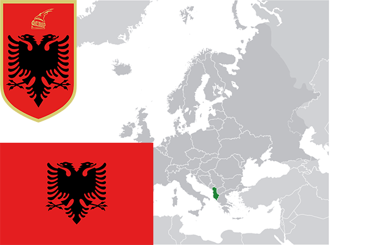

To`liq nomi: Albaniya Respublikasi
Region: Bolqon yarim orolining janubiy-g‘arbidagi davlat
Qonunchilik shakli: Parlamentar Respublika
Mustaqillik kuni: 28-noyabr 1912 yil.Ottomon Imperiyadan
Poytaxti: Tirana
Maydoni: 28,748 km² (dunyoda 139-o`rinda )
Chegaradosh davlatlari: Chernogoriya, Serbiya, Makedoniya, Gretsiya
Aholisi: 2 876 591 (dunyoda 136-o`rinda ) 2017 roʻyxat
Aholi zichligi: 100/km²
Aholining o`rtacha yoshi: 77,75 yil. (80,50 ayol, 75,00 erkak)
Rasmiy tili: Alban
Dini: 47% katolik va pravoslav, 53% musulmon
Pul birligi: lek (ALB/8)
Telefon prefiksi: +355
Internet domen: .al
Xalqaro tashkilotlarga a`zoligi: 1955-yildan — BMT aʼzosi
Dengiz va okeanlarga chiqishi: Adriatika va Ioni dengizlari
YIM: Butun: $ 34.282milliard, Jon boshiga: $ 12,484 (2016- yil roʻyxati)
Yirik shaharlari: Tirana, Durres, Shkoder, Vlyora, Elbasan